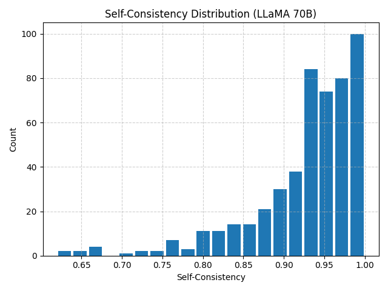
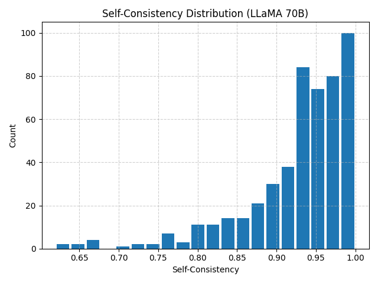

Misinformation in Large Language Models
Project Overview
This project evaluates how LLMs generate and respond to misinformation, focusing on trustworthiness, consistency, factual precision, and resistance to bias. Two open-source LLaMA models (8B and 70B) were benchmarked using multiple datasets and a multi-metric evaluation pipeline.
Research Area: NLP · AI Safety · Misinformation Evaluation · LLM Benchmarking
Research Focus
- Internal consistency of model outputs
- Fact precision with external evidence verification
- Bias Robustness Metric to test framing sensitivity
- Impact of model scale (8B vs 70B) on reliability
Abstract
LLMs are prone to producing confident yet incorrect responses. This study introduces a structured pipeline combining self-consistency, fact precision, and bias robustness metrics to evaluate misinformation tendencies. Results show larger models (70B) achieve higher consistency, better factual reliability, and more stable behavior under biased prompts. Multi-metric evaluation is crucial, as single metrics like confidence alone are insufficient.
Methodology
- Dataset collection from LIAR, FEVER, wiki853, and self-developed prompts
- Preprocessing and conversion to standardized CSV formats
- Prompting LLaMA models as fact-checkers with structured outputs
- Evaluation pipeline measuring self-consistency, fact precision, and bias robustness
Dataset & Evaluation Metrics
The project used both real-world and synthetic misinformation datasets covering politics, science, and social issues. Metrics assessed include:
- Self-consistency across multiple model outputs
- Fact precision verified with external evidence (FEVER)
- Bias Robustness Metric for sensitivity to framing
- Confidence, unknown rate, and agreement with verifier
Key Findings
- 70B model shows higher self-consistency (≈0.928 vs 0.873) and lower risk
- Fact precision depends on both model scale and evidence quality
- Bias Robustness shows models resist accepting false premises under framing
- Single metrics like confidence alone are unreliable; multi-metric evaluation is essential
 


Contributions
- Multi-metric evaluation pipeline for misinformation in LLMs
- Comparison of small (8B) and large (70B) LLaMA models
- New dataset including neutral, mildly biased, and strongly biased prompts
- Insights on model scale, reasoning stability, and safe deployment practices